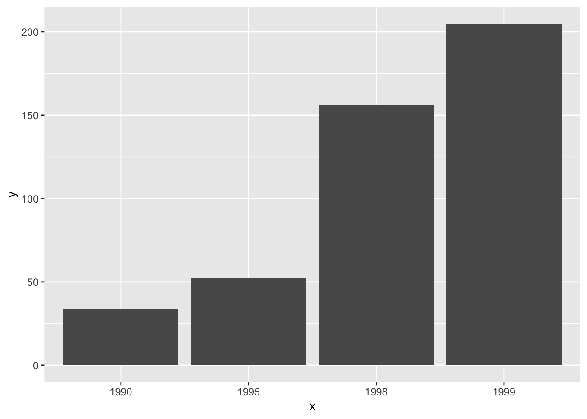

Chapter 5 Results
## # A tibble: 20 x 4
## Give_birth Marriage Education Estimate
## <chr> <chr> <chr> <int>
## 1 birth Married Less Than High School 202572
## 2 birth Married High School or Equivalent 448750
## 3 birth Married Some Colleges or Associoate Degree 715554
## 4 birth Married Bachelor Degree 745148
## 5 birth Married Advanced Degree 494817
## 6 birth Unmarried Less Than High School 220616
## 7 birth Unmarried High School or Equivalent 450356
## 8 birth Unmarried Some Colleges or Associoate Degree 460590
## 9 birth Unmarried Bachelor Degree 103445
## 10 birth Unmarried Advanced Degree 36034
## 11 Nobirth Married Less Than High School 2686948
## 12 Nobirth Married High School or Equivalent 5906857
## 13 Nobirth Married Some Colleges or Associoate Degree 8802059
## 14 Nobirth Married Bachelor Degree 7961510
## 15 Nobirth Married Advanced Degree 5241343
## 16 Nobirth Unmarried Less Than High School 9244270
## 17 Nobirth Unmarried High School or Equivalent 9252305
## 18 Nobirth Unmarried Some Colleges or Associoate Degree 13748688
## 19 Nobirth Unmarried Bachelor Degree 7213809
## 20 Nobirth Unmarried Advanced Degree 2943900ggplot(birth) +
geom_col(aes(x = as.factor(Marriage), y = Estimate, fill = Education), position = "fill")+
coord_flip() +
theme(legend.position = "bottom") +
#guides(fill = guide_legend(reverse = TRUE)) +
facet_wrap(~Give_birth, ncol = 1)+
ylab("proportion") +
xlab("Marriage Status")+
ggtitle("Proportional breakdown of Class for each level of UsuallyDrink,
faceted on Gender")